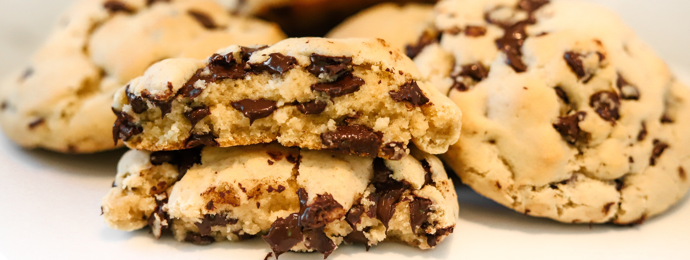
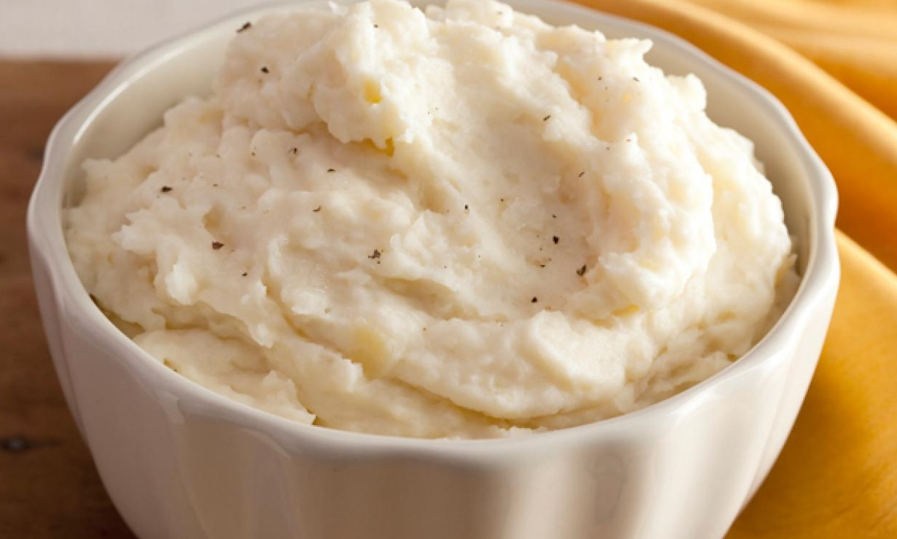

Alton Brown's Chewy Chocolate Chip Cookies
- 8 ounces unsalted butter
- 12 ounces bread flour
- 1 teaspoon kosher salt
- 1 teaspoon baking soda
- 2 ounces granulated sugar
- 8 ounces light brown sugar
- 1 large egg
- 1 large egg yolk
- 1 ounce whole milk
- 1 1/2 teaspoons vanilla extract
- 12 ounces semisweet chocolate chips
- Melt the butter in a 2-quart saucepan over low heat. Set aside to cool slightly.
- Sift together the flour, salt, and baking soda onto a paper plate. Pour the butter into your stand mixer's work bowl. Add the sugar and brown sugar and beat with the paddle attachment on medium speed for 2 minutes.
- Meanwhile, whisk together the whole egg, the egg yolk, milk, and vanilla extract in a measuring cup. Reduce the mixer speed and slowly add the egg mixture. Mix until thoroughly combined, about 30 seconds.
- Using the paper plate as a slide, gradually integrate the dry ingredients, stopping a couple of times to scrape down the sides of the bowl. Once the flour is worked in, drop the speed to "stir" and add the chocolate chips. Chill the dough for 1 hour.
- Preheat the oven to 375 degrees F and place racks in the top third and bottom third of the oven.
- Scoop the dough into 1 1/2-ounce portions onto parchment-lined half sheet pans, 6 cookies per sheet. Bake 2 sheets at a time for 15 minutes, rotating the pans halfway through. Remove from the oven, slide the parchment with the cookies onto a cooling rack and wait at least 5 minutes before devouring.

Alton Brown's Creamy Garlic Mashed Potatoes
- 3 1/2 pounds russet potatoes
- 2 tablespoons kosher salt
- 16 fluid ounces (2 cups) half-and-half
- 6 cloves garlic, crushed
- 6 ounces grated Parmesan
- Peel and dice potatoes, making sure all are relatively the same size. Place in a large saucepan, add the salt, and cover with water. Bring to a boil over medium-high heat and then reduce heat to maintain a rolling boil. Cook until potatoes fall apart when poked with a fork.
- Heat the half-and-half and the garlic in a medium saucepan over medium heat until simmering. Remove from heat and set aside.
- Remove the potatoes from the heat and drain off the water. Mash and add the garlic-cream mixture and Parmesan; stir to combine. Let stand for 5 minutes so that mixture thickens and then serve.